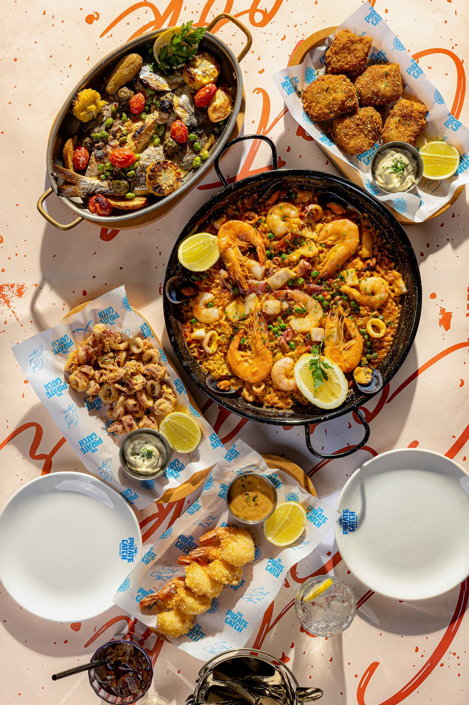
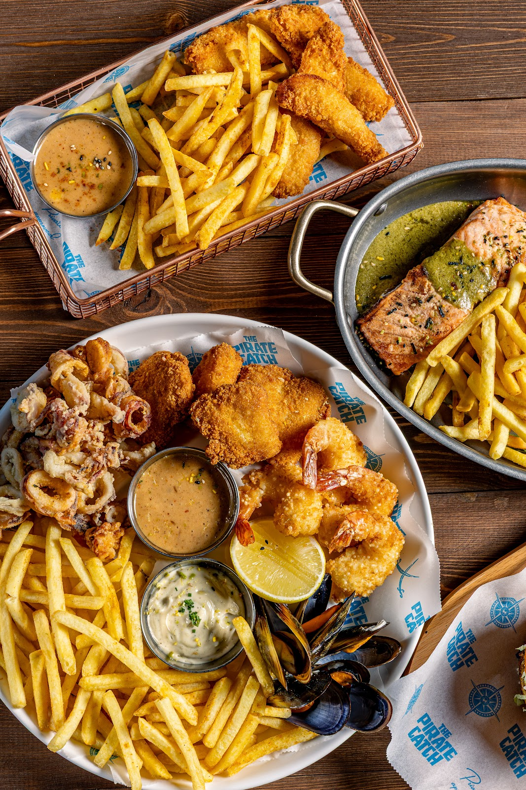
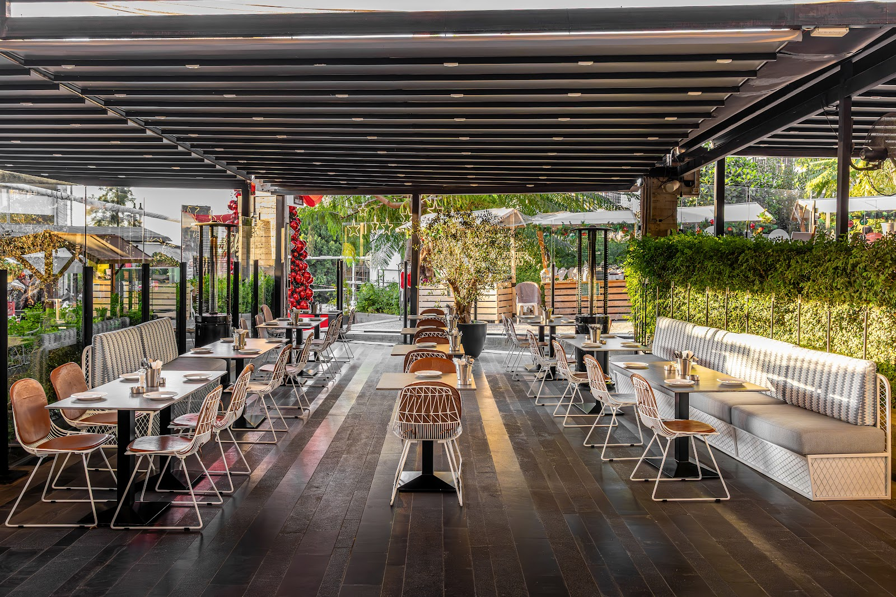
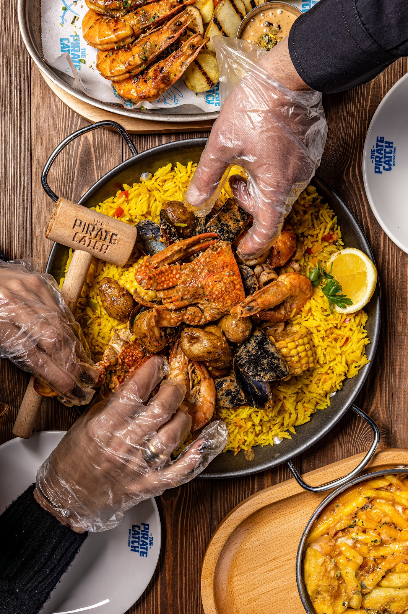
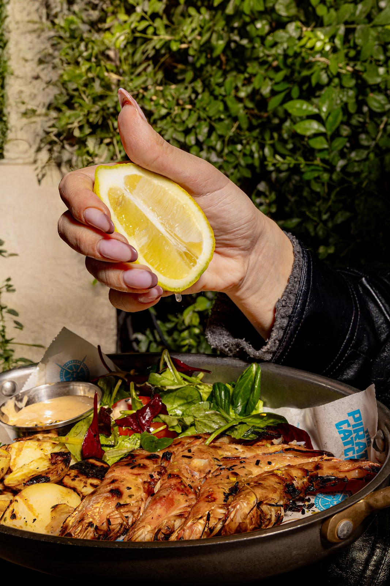

If you're looking for a new dining experience with no regrets at all, just pass by.... highly recommendedAlain Abboud
big fan of their fish burger & fresh crab roll! paella et seafood bucket are recommended if you want to get your hands dirty! P.S: they serve an amazing margarita too & their fries are on point!karl abiaad
We tried TPC Seafood Diner and honestly,so good. The seafood was fresh, perfectly cooked, and full of flavor (fried platter and the seafood boil was on point).Khalil Raad
The Backyard, Hazmieh, Lebanon
+961 78 747 283